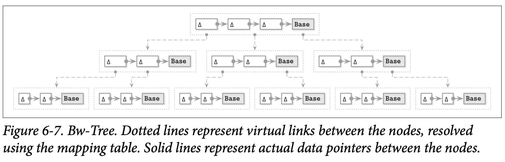

Bw-Trees
Write amplification 写放大是实现了就地更新的 B-Tree 最大的问题之一：接连的对 B-Tree 页的更新可能会需要每次都对磁盘中该页的副本进行更新。第二个问题是 space amplification 空间放大：我们申请了额外的空间来实现更新。这意味着每次传输数据时，除了必要的字节，还需要传输一些空的字节跟页的其他信息。第三个问题是解决并发问题跟处理 Latche 的复杂度很高。
为了同时解决这三个问题，我们需要一种不同于我们之前讨论的实现方式。缓冲更新能够帮助我们优化写入跟空间的放大问题，但对于并发问题没有什么帮助。
我们可以使用只附加的存储引擎来批量处理多个节点的更新，将节点连接成一条链，然后使用基于内存的数据结构，这个结构使用 compare-and-swap 来为每个节点添加关联的指针，从而使树实现 lock-free。这种方式被称为 Buzzword-Tree (Bw-Tree)。
Update Chains
Bw-Tree 单独的写入每个基础节点的修改。在链中保存修改 (delta nodes) 信息：一个链表，从最新修改一直连接到较旧的修改，最后是其基础节点。每个更新可以单独的进行存储，而无需重写已经存在于磁盘中的节点。这些增加的节点可以表示插入、更新或是删除。
因为基础跟增加的节点不一定会基于页的大小对齐，所以可以将他们连续的保存到一起，又因为基础跟增量的节点都不是在更新时直接进行修改的 (所有的修改都只会添加到链表的头部)，我们不需要申请任何额外的空间。
将一个节点视为逻辑性而不是物理性的实体是一个很有趣的变化：我们不在需要为他预分配空间，不再要求节点需要有固定的大小，或不需要将他们保存在连续的内存段中。这当然也有缺点：在读取的时候，所有的增量节点需要重新应用到基础节点上，来构建出这个节点的真实状态。中跟 LA-Tree 有些类似：将变化跟主结构独立进行保存，并在读取的时候重新应用变更操作。
Taming Concurrency with Compare-and-Swap
允许在基于磁盘的树结构的子节点前添加元素的开销会非常大：他会需要我们不断的去更新父节点让他指向最新的增量元素。这也是为什么 Bw-Tree 节点包含的增量跟基础节点使用了逻辑标识符，并使用内存映射表来进行标识符跟具体磁盘位置转换的原因。使用这个映射还能让我们不去使用 Latches: Bw-Tree 不会在写入的时候获取具有排他性的所有权，而是使用 Compare-and-Swap 来处理映射表的物理偏移量。
Figure 6-7 展示了一个简单的 Bw-Tree，每个逻辑节点包含了一个基础节点跟多个链接起来的增量节点。

更新 Bw-Tree 节点的算法会执行下面的步骤：
- 从根节点开始进行遍历来找到目标的叶子节点，映射表包含了指向目标基础节点或者是更新链中的最新增量节点
- 新的增量节点会被创建并指向步骤 1 中找到的基础节点 (或是最新的增量节点)
- 映射表中会被更新为指向步骤 2 中最新创建的增量节点
更新操作中的第三步会使用原子性的 Compare-and-Swap 操作来完成，所以所有的读取跟指针的修改是可以并发进行的，他们要么在修改之前要么在修改之后进行，而不会因为更新而导致读取被堵塞。在修改之前的读取不会看到最新的增量节点，因为他还没成功更新，在修改之后的读取会使用最新的指针，因此能观察到最新的更新。如果两个线程同时尝试去更新最新的增量节点，只有一个能够执行成功，另一个则需要再次进行重试。
Structural Modification Operations
Bw-Tree 的逻辑结构跟 B-Tree 的类似，意味着他的节点也可能增长得过大或是收缩到几乎为空导致需要对树的结构进行修改操作 (SMOs)，比如进行分裂或合并。分裂跟合并的语义跟 B-Tree 的是类似的，只是他们的实现是不同的。
分裂操作首先会对需要分裂节点的逻辑内容进行整合，将所有的增量节点应用到基础节点上，然后创建一个新的包含了分裂点右侧元素的页。然后就继续执行下面的两步：
- Split 一个特殊的分裂变化节点或被添加到正在分裂的节点上，用于通知读取者现在正在发生分裂。分裂的增量节点会持有一个中间的分隔键来当前分裂节点的记录失效，并将它连接到新的逻辑邻接节点。
- Parent update 这个时刻跟 B^link^-Tree 的 half-split 版分裂状态有点类似，因为节点可以通过拆分的增量节点的指针进行访问，但还没被父节点所引用，读取的操作需要先访问旧节点，在通过他的邻接节点来访问到最新创建的节点。新的节点最后会作为子节点添加到父节点上，这样读取者就能够直接访问新的节点，而不是通过分裂节点间接的访问了，然后分类就完成了。
更新父节点的指针是一个性能的优化点：所有的节点跟他们的元素在父节点的指针未被更新前是依然能够被访问的。Bw-Tree 是无锁的 (latch-free)，所以任意一个线程都可能遇到未完成的 SMO。所以线程需要在继续执行前，先合作完成需要多个执行步骤的 SMO。然后下一个线程就能够跟随已经设置好的父节点指针，而无需在通过邻接指针来访问了。
合并的 SMO 按照类似的方式执行：
- Remove sibling 一个特殊的 移除增量节点 会被创建并添加到右邻接节点中，用来标识现正开始执行合并 SMO，并标记右邻接节点为已删除
- Merge 合并增量节点会在左相邻节点中创建并指向右相邻节点的内容部分，即使他成为左相邻节点的部分逻辑
- Parent update 到了这里，右相邻节点的内容可以从左相邻节点访问到了，为了完成合并的操作，需要删除父节点指向右相邻节点的指针。
并发的 SMO 需要在父节点上增加额外的 abort delta node 中断增量节点来防止出现并发的分裂跟合并，中断增量节点有跟写入锁类似的功能：在同一个时刻只有一个线程能够获取这个写入的权限，其他尝试往这个增量节点添加新记录的线程都会被中止。在 SMO 完成后中断增量节点就可以从父节点上面移除了。
Bw-Tree 的高度会在根节点分裂的时候增加，当根节点太大时会分裂成两个节点，然后会在原本的位置创建新的根节点，接着原本的根节点跟其新创建的邻接节点会成为他的子节点。
Consolidation and Garbage Collection
增量链在没有增加额外措施的情况下能够无限的增长，因此读取的代价也会随着链条越长变得越昂贵，我们需要尝试将增量链的长度控制在合理的边界内。当他触及到了配置的阈值时，我们会通过将所有增量节点应用到基础节点上来重建这个节点，并让他成为新的基础节点。新的基础节点会被写到磁盘中的新的位置，然后会将映射表中对应的指针指向它。作为构建日志结构化存储的基础，他被用来负责垃圾回收、节点合并跟重分配，我们会在后续的 LLAMA and Mindful Stacking 中讨论更多的细节。
在节点被合并时，原本的内容 (基础节点跟增量节点) 就无法从映射表中定位到了。但是我们不能马上释放这部分内存，因为他们可能仍然被其他正在执行的操作使用着。因为读取者没有持有任何 Latch (读取者不需要经过或注册任何屏障信息来访问一个节点)，我们需要找到其他的方式来跟踪存活的页。
为了将能看到或不能看到特定节点的线程分隔开， Bw-Tree 使用了一种称为 epoch-based reclamation 的技术。如果有些节点跟增量信息因为整合，在某个代数从映射表删除了，则该原始的节点会被保留直到该代数或更低代数的读取完成。在这之后，该节点才能够被安全的进行垃圾回收，因为需要确保后续的读取者无法看到这些节点，因为这些读取者启动的时候这些节点应该都是无法被定位的。
Bw-Tree 是 B-Tree 的一个有趣的变种，做了许多重要的优化：写放大，非堵塞的访问以及缓存友好性。一个修改过的实现版本是 Sled，是一个实验性的存储引擎。CMU 数据库组织实现了一个基于内存的 Bw-Tree 版本，称为 OpenBw-Tree，并且已经发布了一个实现的指南。
现在我们只是接触到了 Bw-Tree 比较高级别的跟 B-Tree 相关的一些概念，后面我们会在 LLAMA and Mindful Stacking 中继续讨论，讨论包括其底层支撑的结构化日志存储。